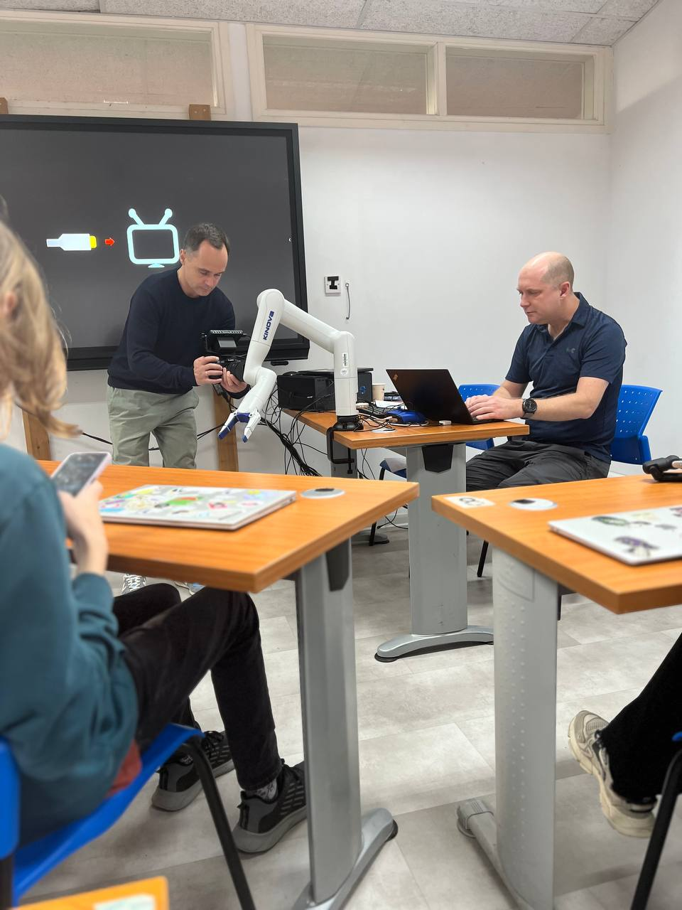
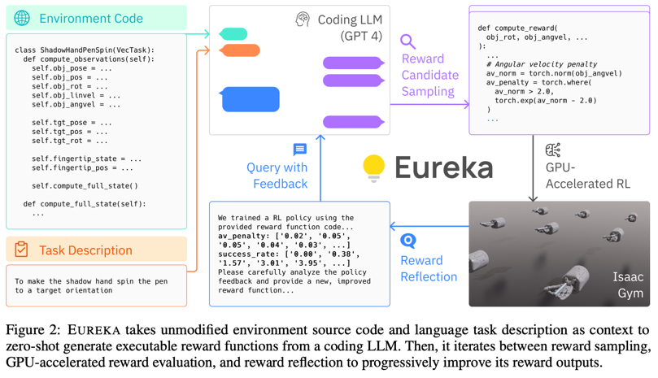
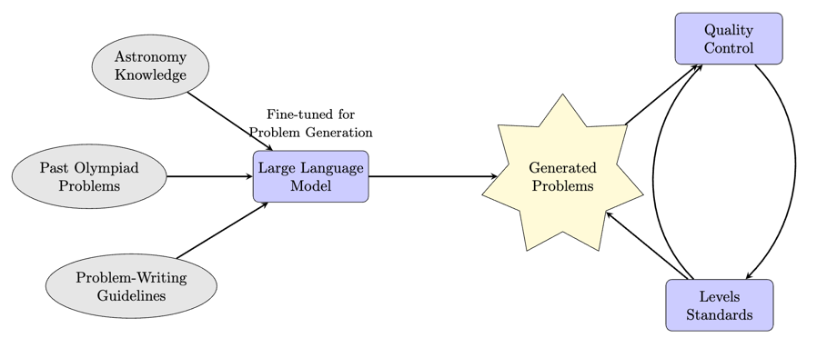
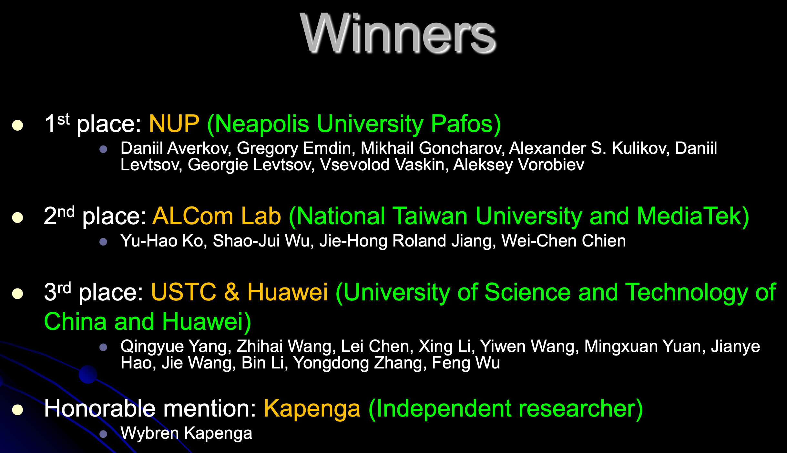

Cyprus IOAI Team Training Overview
What is the IOAI?
The International Olympiad in Artificial Intelligence (IOAI) is one of the newest global competitions in AI – and it has quickly become a major event.
| ➡️ 2024 | ➡️ 2025 | ➡️ 2026 |
|---|---|---|
| 41 teams from 32 countries |
60+ teams from 40 countries |
80+ teams from 60 countries |
IOAI-2025: Individual Contest
| Task Folder | Task Statement | Reference Solution |
|---|---|---|
| Task 1 | Radar | Solution |
| Task 2 | Chicken Counting | Solution |
| Task 3 | Concepts | Solution |
| Task 4 | Restroom Icon Matching | Solution |
| Task 5 | Antique Painting Authentication | Solution |
| Task 6 | Pixel Efficiency | Solution |

Examples: Five current projects by students from our CSAI program
- Tic-tac-toe with Robot Arm
- Animations in Manim for Solving Geometry Problems
- Cryogenic Electron Microscopy
- LLM for Generating Astronomy Olympiad Problems
- Competition on Boolean Circuit Synthesis: 2024 → 2025
1. Tic-tac-toe with Robot Arm
- General idea
- Implement game with robot arm
- Type
- Engineering / Research / Fun
- Equipment
- Kinova robot arm
- Raspberry Pi / Optitrack cameras
- Outcome
- Robot wins human
CSAI NUP. Kirill Krinkin. Spring 2025.

AI in Robotics
Eureka: Human-Level Reward Design via Coding LLMs (ICLR 2024)
2. Animations in Manim for Solving Geometry Problems

- Develop specialized geometric tools to enhance Manim's capabilities for geometry problems
- Create AI system to automatically generate Manim code from problem descriptions
- Build converter to transform GeoGebra constructions into Manim animations
CSAI NUP. Fedor Baharev. Spring 2025.
3. Cryogenic Electron Microscopy
- Machine Learning in Classification: ML-driven 2D/3D classification using maximum likelihood optimization and PCA for conformational analysis
- Intelligent Particle Detection: CNNs revolutionize automated particle recognition, enhancing accuracy over traditional methods
- Advanced Model Generation: Modern deep learning approaches using VAEs and GANs enable robust initial 3D structure determination
CSAI NUP. Fedor Baharev. Spring 2025.
4. LLM for Generating Astronomy Olympiad Problems

- Current Challenge: Existing LLMs fall short in generating high-quality olympiad problems that match Iternational Olympiad standards
- Research Objectives: Develop specialized datasets and explore novel approaches for training AI models to generate problems
CSAI NUP. Alex Avdiushenko. Spring 2025.
5. Competition on Boolean Circuit Synthesis:
2024 → 2025
CSAI NUP. Alexander S. Kulikov. Spring 2025.
Five current projects by students from our CSAI program
- Tic-tac-toe with Robot Arm
- Animations in Manim for Solving Geometry Problems
- Cryogenic Electron Microscopy
- LLM for Generating Astronomy Olympiad Problems
- Competition on Boolean Circuit Synthesis: 2024 → 2025